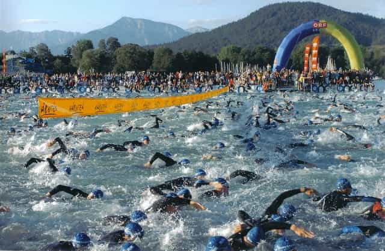
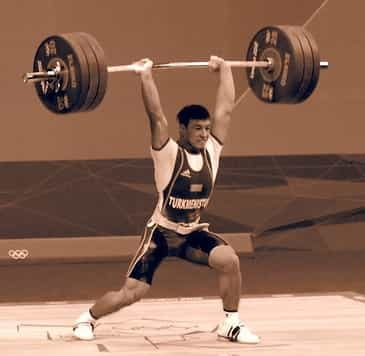
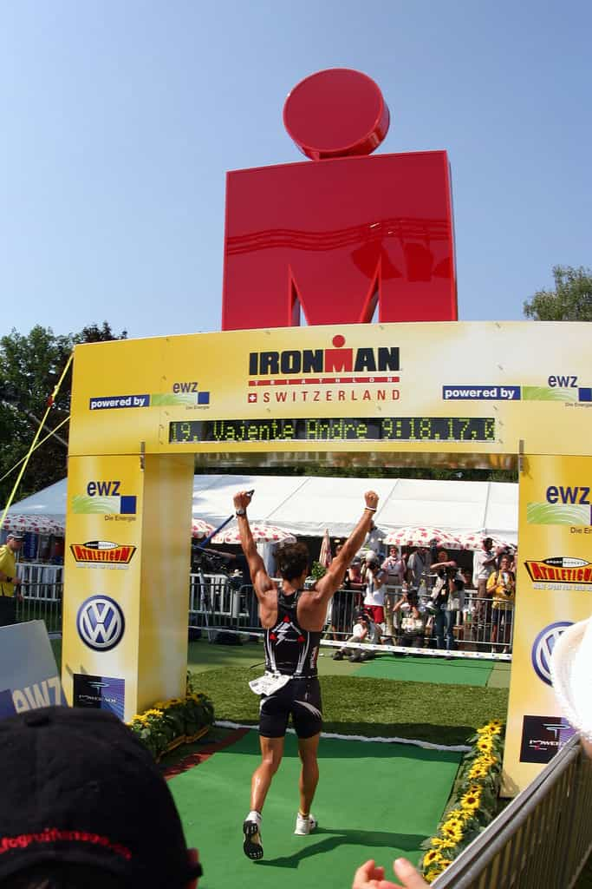

< < < Back
How To Become An Ironman Or Accomplish Other Goals You Can’t Currently Fathom – Return Of Kings
I had let myself go in my early 20’s after starting my career out of college. Smoking a pack of day, eating like crap and not doing any exercising left me in pretty rough shape with the start of a paunch. At the time, I worked with a guy who was working to compete in his first Ironman triathlon; 2.4 mile swim, 112 mile bike and full 26.2 mile marathon. Impressed by this daunting task, I set out to get back into shape and start doing triathlons. Less than three years later, I had qualified for the World Championships in Hawaii at my second Ironman.
So how in the heck did I go from a sloth to being in the top 5% in my age group at one of the most grueling races on the planet in such a short time? The answer was basically hard work, mental perseverance, and preparation. Whether you want to be an Ironman, compete in weightlifting or strongman competitions, or climb a 5.11 ascent, the path to greatness is the same.
1. Start at the beginning and learn your sport; there are no shortcuts
When I started on my triathlon path, I didn’t even know how to swim. In the water, my initial goal was not to drown. To get over this, I used books, DVDs, and a little bit of coaching to build up a swim stroke piece by piece over a period of months. Swimming, like technical weightlifting movements, has a lot of tiny moving parts that you have to get right if you want to be successful. If you want to be mediocre, just jump right in and use bad technique. For triathlon, that equates to slow times, but for other sports like weightlifting, Crossfit or strongman, poor technique could lead to injuries. Break down your movements into small parts; drill those parts over and over again, slowly adding more parts as you become proficient with the foundation. Eventually, you will have a competent movement or skill that at least will allow you to at least compete at an average level.
2. Stretch the rubber band
While I’ve known a few people who decided that their first triathlon would be Ironman distance, most take the approach of smaller steps to the goal. For one thing, it takes a long time to build your body up to something big. Whether it’s snatching your bodyweight, or a twice bodyweight squat, or a six-hour bike ride you don’t just start out going big unless you want to end up injured and back where you started. Slowly extend your training sessions or add weight to your lifts, and build in recovery. Recovery isn’t just eating well with good protein, but it means limiting the amount of stress you have in your life and getting sleep. If you keep adding volume to your training sessions without built-in deload or recovery weeks, you’ll actually take longer to reach your goals. With that said, your body is capable of things you never believed if you take care of it. Less than two years after taking that initial step to get off the couch, I completed my first Ironman and even then barely missed the cut off for Kona. Think big, even when starting out.

3. Set small goals
You may not know what your “big” goal is when you are just starting out, but you can certainly set small goals that take you higher along each step of the path. Without goals to hit, it can be very easy to mentally stagnate. Goal accomplishments, even small ones, give you that psychological boost that you need to keep on trucking, especially on days when you don’t really feel like it. Goals need to be specific, attainable and in a set time frame or they aren’t worth much. Saying you want to get stronger isn’t a goal, it’s a wish. A small goal may be to complete your first triathlon by June , or adding 10 pounds to your squat in a month, or learning how to properly squat clean or snatch. Each small goal is a step to the slightly bigger goals of adding 25 pounds to your squat or hitting a two-times bodyweight deadlift.
4. Track your progress
Not only is progress tracking necessary to learn what works and what doesn’t, thereby allowing you to tweak your training, it is important from a psychological perspective as well. If you have ever competed in anything, you know that failure often sticks in our minds much more than success. So if you have a really poor lifting or training session, you’ll be disappointed and maybe question your abilities to be successful. But if you were to look at your training logs, you’d see firsthand the progress you’ve already made which can be a motivating factor. Be aware that the better you get at a sport, the slower the gains will be.
That first year of lifting, running, BJJ or triathlon you’ll go from knowing and being nothing, to actually having something to hang your hat on. After that, things often slow down and when tracking your progress, you may be discouraged by how long things are taking. Don’t be; you’ve wrung out the newbie gains and are now into the area where you really have to work to make progress. The weak will give up at this stage, the strong-minded will power through this to the next level.
5. Nothing replaces hard work, consistency and time
If you want to be good at something, especially something as large as an Ironman, there is no escaping hard work and patience. You change the way your whole body operates, establishing movement patterns, training your heart to pump blood efficiently to feed your movements. Training through low motivation periods are necessary, as are grinding through periods where it looks like you aren’t making much progress. Muscles get stronger; technique improves if you continue to drill small parts; aerobic and anaerobic capacity increases. Large goals are as much about mental perseverance they are physical. Try to combat the lulls and boredom by introducing entertaining workouts and keeping things positive. But at the end of the day, you have to work long and hard to attain a large goal.

6. Set large goals
I knew early on that I wanted to do Ironman, and wanted to be competitive at that distance. Once that was established, all my small goals led to the large goal. I started my training plan 1.5 years prior to my first attempt at the race, building my base and body, and stretching out what I could do even that far in advance. I was successful because I did things others didn’t or wouldn’t do, such as indoor biking for 4-6 hours at a time in my cold weather climate. Training camps and seeking coaching at various points also helped keep me motivated and increased my abilities. Be patient as you work toward the end goal and enjoy the small victories along the way.
7. Mentally prepare
Preparing all your equipment is the start of this, but visualizing your event cannot be understated. You can set up scenarios in your mind and develop contingency plans for when things start to go awry. Also, you can mentally prepare yourself to be calm in heightened state and stick with the plan. When you find yourself in the heat of the actual moment, you’ve already done the race or event in your head hopefully multiple times and can continue to execute at a high level with very limited mental energy.
8. Race or competition day
By the time you get to the actual large event that you’ve been working towards for months, if not years, you simply need to show up and execute. The hay is in the barn, so go out and enjoy the fruits of your labor. One thing I’ve found that translates to an all-day Ironman event equally as well as a two-day Crossfit competition is pacing. You are going to be ramped up with adrenaline pumping, as well as rested and ready for action. You’ll feel as fresh and as strong as you ever have if you’ve trained and tapered properly. Most people will start out way too fast, blowing their load in the first quarter or third of any event. If you start out slower than you think you can go, settle into a groove and maintain that pace (or even increase) you’re going to find much more success on game day. Finally, don’t underestimate nutrition for any large event, and practice that nutrition in training to make sure it sits and digests well in higher stress situations.

Working toward something big that most people can’t even fathom is something most men should reach for at least once in their life. Whether you hit your goal and perform as expected is moot, as the journey and pushing yourself to your limits is part of the very definition of being a man. Don’t settle for being average; instead find something that allows you to be awesome, starting today.
Read More: Are You On Pace To Reach Your Goals?


{kind=link}
{kind=link}
{kind=link}